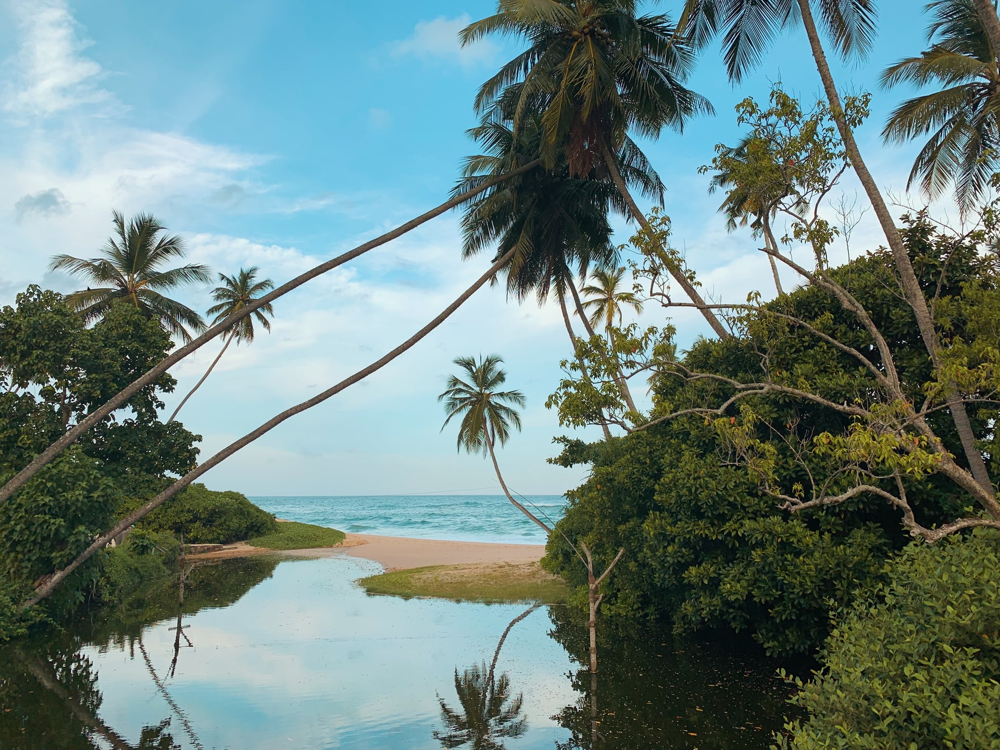

Here Are Some Popular Attractions...
Arugambay
• It's nearly a 10h drive from Colombo. But the freshness of the sea and the sound of the ocean waves will make you refresh as soon as you get here. It's home to international surfers and for many people because of the white coral sand and crystal clear water.

Ella
• Fancy a hike but can't beat the hot weather?
Fear not! Situated just away from Badulla, Ella is blessed with a cool climate and greenery.
Sinharaja Rain Forest
• Situated in bound with Sabaragamuva and Southern provinces , is the South Asia's largest Tropical rainforest. Home to huge number of endemic animals,plants it's truly a gift that mother nature has given us.
Some more places
| Place | Nearest City | Prominent Feature | Distance from Colombo |
|---|---|---|---|
| Yala National Park | Hambanthota | Wildlife Park | 273 km |
| Royal Botanic Gardens | Peradeniya | Botanical Garden | 109 km |
| Sigiriya Fortress | Sigiriya | Ancient Rock Fortress | 167 km |
| Galle Fortress | Galle | Ancient Fortress | 126 km |